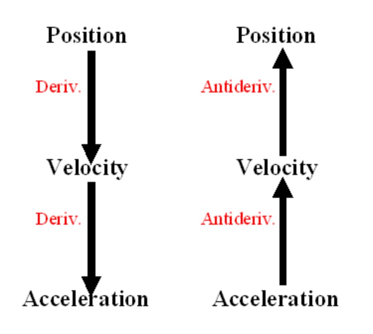
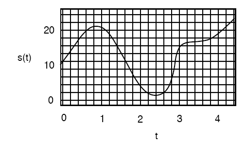
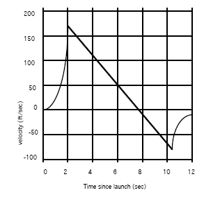

Introduction
-
Dylan
- I wonder where Julia and James are...
-
Julia
- (runs in panting and clutching side) Ha! I win
-
James
- (enters, also catching breath) I just don’t get it, I was going faster than
you at some point!!!
-
Dylan
- Well don’t you know that position, velocity, and acceleration are all
related? Just because you were at a faster velocity at some point doesn’t
mean you got there first!
-
Julia and James
- Oh gosh, please don’t tell me this is more applications of
derivatives...
There are three main aspects of motion that we will examine in this lab; position,
velocity, and acceleration.

Guided Example
A banana is sliding across an ice hockey rink after being thrown in by an
over-excited child. The position of the banana, in meters, can be given by
where is measured in seconds.
What does the slope of the graph mean in this context?
Graph this function.
How would you determine the average velocity from to ?
What is the average velocity over this interval?
With help from the formula you used in the previous question, determine the
instantaneous velocity at any point.
Graph the equation you found.
Does this graph appear to fit our original equation?
If not, go back over your work from the previous problem.
What does the slope of this graph indicate?
Determine the average acceleration from to .
Now, create a function to determine the average acceleration at any point - the
process will be extremely similar to that of problem 1 part d.
On Your Own
Examine the following graph of a particle’s motion:

At what time(s) does the particle return to its initial point?
When, if ever, is the velocity of the particle zero?
s s s s s The particle never has zero velocity.
If these points exist, does the object change direction each time?
Yes No
At approximately what time is the particle moving the most quickly?
Model rockets work through burning a propellant to completion, coasting on
momentum for some time, and finally releasing a parachute when the rocket begins
to fall in order to prevent the rocket and its components from being destroyed upon
landing. Examine the following graph of one such rocket’s motion:

What was the maximum velocity obtained by the rocket?
When did the rocket reach its highest point?
What was the velocity at that time?
When did the rocket’s parachute deploy?
How fast was the rocket descending by that time?
Don’t forget that falling will result in a negative velocity!
Describe how long each phase of the rocket lasted.
At the surface of the Earth, acceleration due to gravity is approximately .
Consider throwing a ball directly upward from atop a 160 meter building at
.
Create an equation to express the acceleration of the ball at any time after it has
been thrown.
Remember, up is the positive direction.
Don’t forget to find the constant of integration - might it have something to do with
the starting speed?
Integrate the previously constructed equation to produce the equation for velocity at
any time for the ball.
Don’t forget the constant here either - what is the other factor influencing height
here?
Now, integrate your new equation yet again to produce the equation for the position
of the ball at any time.
Consider a balloon which has been caught in a jet stream high above the
ground. The horizontal position of the balloon at any time can be given by the
equation
Remember, acceleration is the derivative of velocity, and velocity is the derivative of
position.
Produce the velocity and acceleration equations for the balloon.
Over what time period is the balloon moving in the positive direction?
When is the velocity increasing?
Don’t overcomplicate this - we only need to concern ourselves with position
here!
What was the displacement of the balloon over the interval [0, 2.25]?
Displacement
is distance from the initial position.
On a spring break trip with friends, you find yourself dared to stand upon George
Washington’s nose on Mount Rushmore. While on the dangerous climb down, you
come up with an experiment, and request one of your friends go to the base of the
mountain. When you’re on the nose, you take out your phone and wallet, and
toss the wallet into the air, starting the timer just as you release the wallet.
Simultaneously on the ground, your friend starts a stopwatch on his phone. You stop
the timer as the wallet passes you, with your friend stopping their’s once the wallet
smashes into the ground. Your stopwatch displays 3.8 seconds, and your friend’s
displays 13.72 seconds.
Determine the acceleration, velocity, and position functions for the wallet. You will
need to use equations to determine each constant of integration. Don’t worry about
units here.
What is the wallet’s initial velocity?
What is it’s velocity as it hits the ground?
How far off the ground is George Washington’s nose?
In Summary
-
James
- I guess there’s more to position than just speed!
-
Julia
- A lot more! Do you think you could run through the big points real quick
Dylan?
-
Dylan
- Sure Julia! When we derive position, we get velocity, and when we
derive velocity, we get acceleration. Anti-differentiation will give us
velocity from acceleration and position from velocity.
-
James
- Okay, but how do we get the constant of integration?
-
Julia
- I know this! It’s whatever was the initial velocity or position in the
problem!
-
Dylan
- That’s right Julia! When the initial isn’t given, we can use knowledge
of when an object returns to a position zero or stops for a moment to
determine those constants.